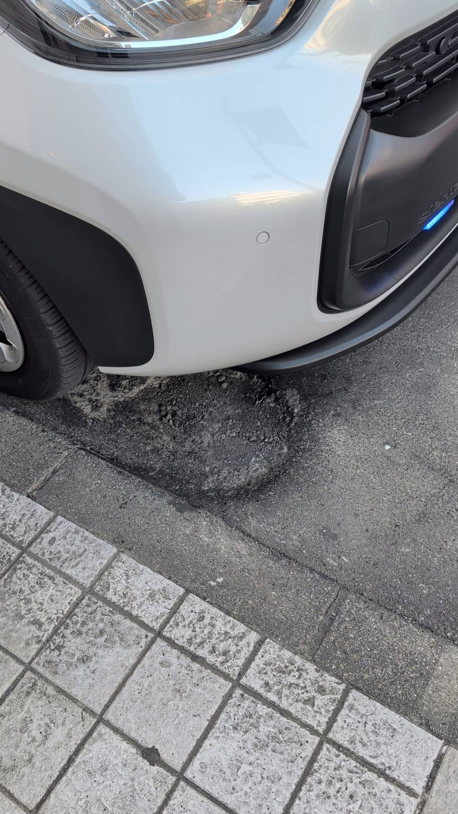

セノバタクシー乗り場の路面の凹みについて
セノバタクシー乗り場の路面が、 まだ凹んでいます。
現場写真

組合からの回答情報提供ありがとうございます。
この問題については、11月10日に開催された 安全衛生委員会で協議され、 その内容は静岡支部会でも報告されています。
セノバタクシー乗り場は 静鉄プロパティの管理区域であるため、 静鉄タクシーが直接修繕することはできず、 管理所から静鉄プロパティへ 修繕を依頼することとなっています。
また、この場所は過去にも修繕が行われていますが、 再び同様の凹みが発生しています。
タクシーが停車していない際には、 一般の歩行者が通行する可能性もあるため、 安全面からも改善が必要と考えています。
過去の修繕後に再発していることから、 再発防止も考慮した対応が望まれます。
具体的な修繕時期については 現時点で確認できておりませんが、 組合としても今後の対応状況を確認してまいります。
対応状況：修繕依頼・進捗確認予定
税抜営収90万円以上の賃金率と賞与の算定基準について
税抜営収90万円以上の場合、 月例給与の賃金率は50％になると認識していますが、 賞与の算定基準額や賃金率については、 明確に分からない部分があります。
特に12月は繁忙期であり、 税抜営収90万円を超える乗務員も 多くなると考えられます。
そのため、90万円以上の月例給与の賃金率と、 賞与の算定基準について 明確にしていただきたいです。
組合からの回答ご意見ありがとうございます。
今回ご指摘いただいた賃金率や 賞与の算定基準については、 組合としても正確に確認する必要があると 考えています。
近々、会社に対して検討委員会の開催を 打診する予定ですので、 その際に今回のご意見を取り上げ、 月例給与の賃金率及び賞与の算定方法について 説明を求めたいと考えています。
会社から回答が得られましたら、 その内容を組合員の皆さんにも お知らせいたします。
対応状況：会社への確認予定
城北のWi-Fi設置について
城北にもWi-Fiを設置してほしい。
組合からの回答城北のWi-Fi環境について、 設置を希望する声が寄せられています。 組合として会社に設置の必要性を伝え、 対応の可能性について確認してまいります。
対応状況：受付済み
組合活動の報告はどこで確認できますか？
公式LINEのリッチメニューにある 「お知らせ」からご確認いただけます。
公式LINE以外の組合への意見や要望は、どのように伝えればよいですか？
各支部の中央委員か各営業所に設置してある 「みんなの声」にご意見を書いて投じて下さい。 いただいたご意見は、必要に応じて組合内で協議します。